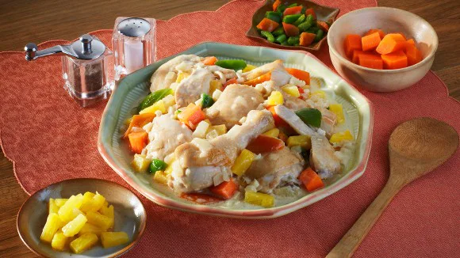
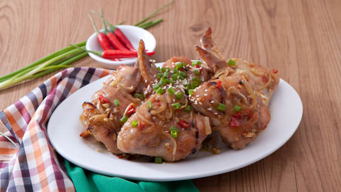
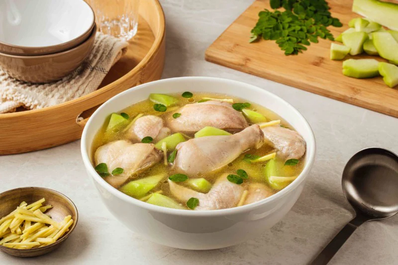
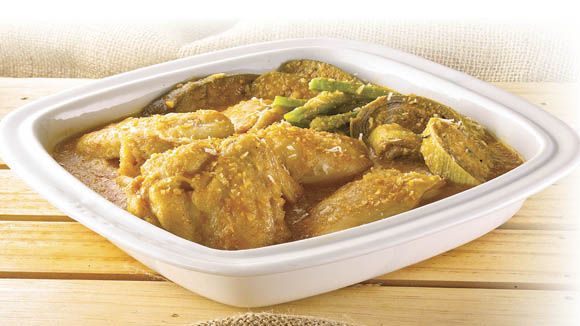
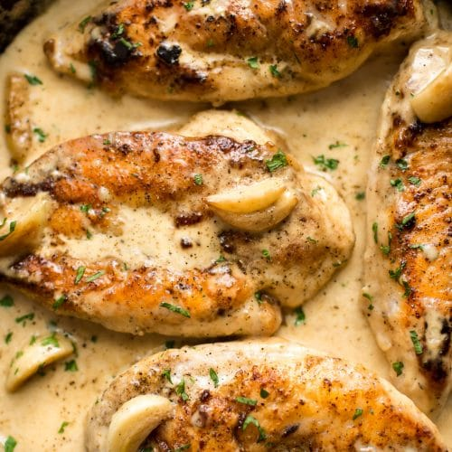

Pininyahang Manok

INGREDIENTS
1/2 kilo chicken, cut ups
1 (227g) pineapple chunks
2 pcs potatoes, peeled and cubed
2 pcs potatoes, peeled and cubed
1 pc carrots, peeled and cubed
1 cup red and green bell peppers, desseded and cubed
1/2 cup all purpose cream or coconut cream (optional)
1/2 cup malunggay leaves (optional)
INSTRUCTIONS
First, get a pan and make it nice and hot over medium high heat. Pour some oil and throw in the onions and garlic. Saute until tender.
Add the chicken and cook until the color changes.
Drop in the Knorr Chicken Cube with the patis, the pineapple chunks with juice/syrup and water last. Give this a nice simmer of 3 minutes.
Next, add the potatoes, carrots and bell peppers. And cook them until the chicken and vegetables are tender. You may add the sugar if you want the dish to be a bit sweeter.
Get ready to reduce the heat to low before pouring in the all purpose cream or coconut cream. Be careful not to let this boil as the cream may curdle if the heat is too high. Add the malunggay leaves at this point. Cook for 1-2 minutes over low heat and that's it! With a big serving of warm rice, prepare to eat more than usual.
Spiced Chicken Wings

INGREDIENTS
5 pcs siling labuyo, chopped
2 tbsp spring onions, chopped
Optional: Serve with singkamas/jicama, carrot and celery sticks on the side
INSTRUCTIONS
This recipe is so simple and such a breeze to make. You’ll be surprised by how easy the process will be. First, you’ve got to flavour the wings in a mixture of Liquid Seasoning, Chicken Cube, sugar, sili, onion, garlic and sesame oil for at least 30 minutes.
Transfer the wings in a baking pan and place these in the oven to cook for 30 minutes or until the chicken is done.
Give your chicken wings a nice finish by adding a sprinkle of sesame seeds and chopped spring onions on top.
Tasty and spicy, Spiced Chicken Wings is guaranteed to be a winner whatever the occasion.
Chicken Tinola

INGREDIENTS
30 g onion, small -sized, chopped
8 g cloves garlic, chopped
15 g ginger, cut into strips
1/2 kilo chicken, cut into 8 pcs
2 pcs Knorr chicken cubes
120 g chayote or 120 g small -sized green papaya, sliced
INSTRUCTIONS
Get a pot and bring it up to medium heat before pouring in the oil. Drop in the onions, garlic and ginger and sauté slowly for about 2 minutes or until you can smell the lovely aroma.
It’s time to drop in the chicken pieces and stir until it turns white or light brown in color.
Pour in the water and add your Knorr Chicken Broth cubes. Bring this to a simmer until chicken is tender and cooked through.
You can now add your sayote or green papaya and cook until tender.
Dahon ng sili is added at the last stage to ensure leaves (and nutrients) don’t dry up. Give this a minute then it is done. Malunggay is also another healthy alternative because it is packed with vitamins and minerals which are good for nursing moms and kids as well.
Enjoy this with patis and calamansi on the side. See the faces of your whole family light up as you bring this to the table.
Coconut Chicken Kare Kare

INGREDIENTS
3/4 kg whole chicken, chopped
1 pack Knorr Complete Recipe Mix Kare-Kare
1/2 pack Knorr Ginataang Gulay Mix
1/2 bundle pechay Tagalog
INSTRUCTIONS
For the first step, you need to cook the chicken in a stockpot filled with 6 of cups water and Knorr Chicken Cube.
Next, get another pan and heat this to medium high. Pour a little bit of oil and throw in the onion, garlic and meat. Allow these to cook for a few minutes or until you can smell the lovely aroma from the vegetables. Pour in the Knorr Complete Recipe Mix Kare Kare and the Knorr Ginataang Gulay Mix that have been dissolved in 3 cups of water.
You may now add the vegetables and allow these to simmer in low heat until the vegetables are cooked through.
With a large serving of rice, it’s nice and exciting to share something as creative as this with the family.
Creamy Garlic Chicken

INGREDIENTS
2 large chicken breasts cut in half lengthwise
2 tablespoons butter divided
1 whole head garlic cloves peeled
1/2 cup chicken broth or stock
1/4 teaspoon garlic powder
1 cup heavy/whipping cream
Parsley chopped (optional)
INSTRUCTIONS
Cut the chicken in half lengthwise so you have 4 smaller cutlets. Sprinkle them with some salt & pepper and coat them in the flour.
Add the olive oil and 1 tbsp of the butter to a skillet over medium-high heat. Once the pan is hot, sauté the chicken for 4-5 minutes/side or until it's nice and golden. Take the chicken out of the pan and set it aside.
Reduce the heat to medium (or even med-low if using cast iron), and add the rest of the butter to the pan. Let it melt and then add the garlic cloves. Cook them for 3-4 minutes, stirring often, until they're lightly browned on the outside.
Add the chicken broth, lemon juice, and garlic powder to the pan. Let it bubble for around 4 minutes or until the liquid is noticeably reduced.
Stir in the cream and add the chicken back into the pan. Let it cook for another 5 minutes or so, until the sauce is reduced and the chicken is cooked through. Serve with freshly chopped parsley if you wish.